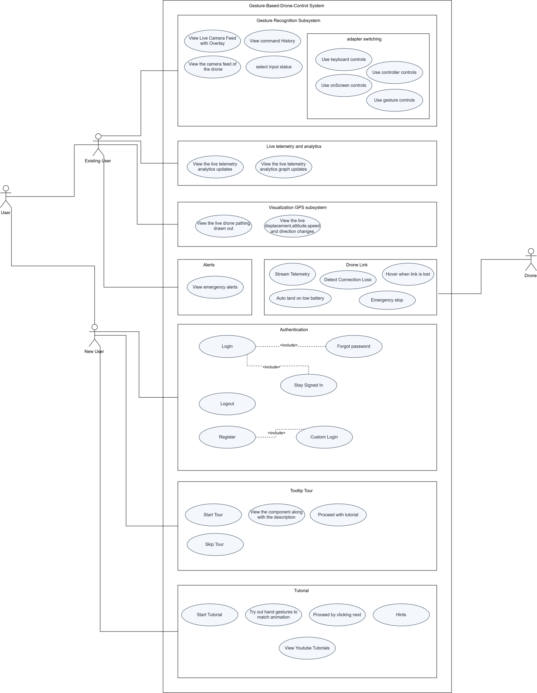

Software Requirements Specification¶
1. Introduction¶
1.1 Purpose¶
This SRS specifies the Gesture-Based Drone Control (GBDC) system, a real-time pipeline utilising computer vision that translates hand gestures into unmanned aerial vehicle (UAV) flight commands. It is the authoritative reference for:
- The development team at Codex Merchants, for implementation and verification.
- The Project owner and mentor(s), EPI-USE Labs, as the acceptance baseline.
- The academic mentors (COS 301 staff), for evaluation.
1.2 Scope¶
Product name. Gesture-Based Drone Control (hereafter GBDC).
What the product will do. GBDC captures a live camera feed, detects 21-point hand landmarks using MediaPipe, classifies the resulting gestures via a rule-based engine (with an optional TFLite-based recognizer as a strategy alternative), translates the recognised gestures into flight commands, and dispatches those commands to a drone or drone simulator through an adapter abstraction. A web dashboard provides live telemetry, gesture-overlay video, and command auditing.
What the product will not do.
- It will not perform autonomous mission planning (e.g. waypoint flight, GPS route-following).
- It will not perform computer-vision tasks beyond hand-landmark detection (no face recognition, object tracking, or scene understanding).
- It will not control multiple drones simultaneously in v1.
- It will not operate in beyond-visual-line-of-sight (BVLOS) conditions.
Benefits. Removal of the physical controller barrier improves accessibility for novices and users with limited fine-motor capability, and creates a natural human-computer interaction model suitable for educational, demonstration, and experiential settings.
1.3 Definitions, Acronyms, and Abbreviations¶
| Term | Definition |
|---|---|
| GBDC | Gesture-Based Drone Control system - the product specified by this SRS. |
| UAV | Unmanned Aerial Vehicle. Our drone in this case. |
| GCS | Ground Control Station - the host machine running the recognition pipeline. |
| FPS | Frames Per Second. |
| CV | Computer Vision. |
| OpenCV | Open-source Computer Vision library. Used for camera frame capture and preprocessing. |
| UVC | USB Video Class. The standard protocol used by USB-connected cameras, enabling plug-and-play use with OpenCV |
| MediaPipe | Google's framework for real-time hand-landmark detection. |
| HID | Human Interface Device. Any hardware input peripheral, such as a keyboard, gamepad, or camera. |
| Latency | End-to-end delay from each step in the pipeline, i.e. gesture recognition to command dispatch. |
| ML | Machine Learning. |
| TFLite | TensorFlow Lite - lightweight on-device ML inference runtime. |
| SDK | Software Development Kit. |
| API | Application Programming Interface. |
| WS | WebSocket, used for real-time communications such as gesture streaming |
| REST | Representational State Transfer, endpoints used for config, logs, system faults |
| Failsafe | A predefined safe-state behaviour triggered automatically on fault. |
| Adapters | A two-way adapter is implemented to decouple input methods and UAV options. |
| PAS | Project AirSim. Microsoft's Unreal Engine 5 based drone sim, the successor to legacy AirSim. |
| AS | AirSim. Microsoft's legacy Unreal Engine 4 based drone simulator. |
| pynng | Python bindings for the NNG (Nanomsg Next Generation) messaging library. Used by PAS's Python client. |
A site-wide list of abbreviations is auto-appended on every page via
docs/includes/abbreviations.md.
1.4 References¶
- Kung, D. C. Software Engineering (2nd ed.). McGraw-Hill, 2024.
Chapters 3-5 and 7 (System Engineering, Requirements Elicitation,
Domain Modeling, Use Cases). Architectural content (Ch. 6) is now
covered by
SAS.md. SAS.md- Software Architecture Specification (the architectural, technological, and deployment counterpart to this document).BRAND.md- Brand & Design System (the visual and UX counterpart to this document).- COS 301 lecture material - System Engineering & Software Requirements Elicitation. University of Pretoria, 2026.
- EPI-USE Labs. Gesture-Based Drone Control - Project Brief (tender document, 2026).
- Codex Merchants. Tender Response & Proposed Architecture
docs/reports/tender.pdf. - MediaPipe Hands documentation - google.github.io/mediapipe/solutions/hands.
- xFly SDK / DJI Tello SDK product documentation.
- Microsoft AirSim - microsoft.github.io/AirSim.
1.5 Overview¶
The remainder of this document is organised as follows.
- Section 2 - Overall Description. Product perspective, interfaces, operating environment, user characteristics, assumptions, and dependencies.
- Section 3 - Specific Requirements. External-interface, functional, and
quality-attribute requirements, plus base features and process requirements,
numbered using the hierarchical
R<i>.<j>.<k>scheme. Architectural and technological decisions that realise these requirements live inSAS.md. - Section 4 - Use Cases. Use-case diagram and full use-case descriptions for the primary operational scenarios.
- Section 5 - Domain Model. The analysis-level domain model that anchors the design.
- Appendices. Requirements-elicitation methodology, traceability matrix, and revision history.
2. Overall Description¶
2.1 Product Perspective¶
GBDC is a self-contained, ground-based application that interfaces with a detachable UAV (real or simulated) and a single human operator via a camera and a dashboard. It is structured into six tiers, applying a top-down, divide-and-conquer decomposition so that each tier is functionally cohesive and loosely coupled.
flowchart LR
A[Tier 1<br/>Hardware Input] --> B[Tier 2<br/>CV & Gesture Pipeline]
B --> C[Tier 3<br/>Backend API]
C --> D[Tier 4<br/>Frontend Dashboard]
C --> E[Tier 5<br/>Application Deployment]
E --> F[Tier 6<br/>DevOps & Docs]Figure 2.1 - Six-tier logical decomposition of GBDC. The corresponding
architectural-style choices for each tier are documented in
SAS.md Section 2.
2.1.1 System Interfaces¶
| Interface | Direction | Protocol | Purpose |
|---|---|---|---|
| Camera -> Processing Pipeline | In | OpenCV VideoCapture (USB / built-in) |
Raw video frames at ≥30 FPS. |
| Processing Pipeline -> Backend | In-process | Python async queue | Recognised-gesture events. |
| Backend <-> Frontend | Bidirectional | WebSocket (JSON) | Live gestures, telemetry, control. |
| Backend <-> Drone Adapter | Bidirectional | xFly SDK / Tello SDK / AirSim RPC | Command dispatch and telemetry. |
| Backend <-> Storage | Out | SQLite (file) | Gesture log, telemetry history. |
2.1.2 User Interfaces¶
A single-page web dashboard, served by the backend, and either hosted externally, or packaged via Electron (desktop) / PWA + Capacitor (mobile), provides:
- A live video feed with hand-landmark overlay.
- A current-gesture indicator and the command it maps to.
- Telemetry panels (altitude, battery, signal, flight mode).
- Critical-event alerts (low battery, signal loss, failsafe).
Final visual specifications, component states, and wireframes are documented
in BRAND.md.
2.1.3 Hardware Interfaces¶
- A standard webcam or built-in laptop camera (≥720p, ≥30 FPS).
- A supported UAV (initially an XFly drone ) or a machine running AirSim or PAS.
2.1.4 Software Interfaces¶
The runtime software stack and the rationale for each choice are documented
in SAS.md Section 3: Technology Requirements.
A summary of the major versions is provided here for context:
| Software | Version | Role |
|---|---|---|
| Python | 3.11.x | CV / ML / backend runtime. |
| FastAPI | 0.110+ | REST + WebSocket backend. |
| OpenCV | 4.8+ | Frame capture and pre-processing. |
| MediaPipe Hands | 0.10+ | Landmark detection. |
| TensorFlow Lite | 2.x | Optional ML gesture classifier. |
| React + TypeScript | 18 / 5.x | Frontend dashboard. |
| Project AirSim | latest | Primary drone simulator. |
| AirSim | latest | Secondary drone simulator. |
| xFly Tello SDK | latest | Physical-drone interface. |
| Capacitor | latest | Mobile packaging. |
| Electron | latest | Desktop packaging. |
| SQLite | 3.x | Local persistence. |
2.1.5 Communications Interfaces¶
- WebSockets for live gesture / telemetry streams between backend and frontend.
- HTTP/1.1 + REST endpoints for configuration, history queries, and authentication.
- Vendor SDK transports (UDP for Tello, RPC for AirSim) hidden behind the
DroneAdapterabstraction.
2.1.6 Memory Constraints¶
- Target footprint on the GCS: ≤ 1 GB RAM at steady state. This excludes the footprint of drone simulations, which are computationally expensive by nature.
- SQLite log volume capped at 250 MB before automatic rotation.
2.1.7 Operations¶
GBDC operates in multiple modes:
Operator stands in front of the camera, system runs the full capture -> recognition -> command pipeline against a connected drone or simulator. Telemetry streams continuously to the dashboard.
The dashboard replays a logged session from SQLite, including the recognised-gesture stream and the resulting telemetry. No drone is required.
2.1.8 Site-Adaptation Requirements¶
The system requires no on-site adaptation beyond:
- Selecting the active drone adapter (
pas/airsim/xfly) via an on screen prompt. - Configuring the camera index if multiple cameras are connected.
2.2 Product Functions (Summary)¶
At a high level, GBDC shall:
- Capture and pre-process a live video stream from a camera.
- Detect and track hand landmarks in real time.
- Classify hand pose into one of a fixed gesture vocabulary.
- Translate gestures into drone commands via a deterministic mapping.
- Dispatch commands through a pluggable drone adapter (xfly / pas / as).
- Stream gestures, commands, and telemetry to a live dashboard.
- Persist gesture and telemetry logs for review and replay.
-
Enforce safety failsafes (hover, auto-land, idle detection, takeoff lockout).
-
For the sake of broader accessibility, this core loop is supplemented by the option for multiple input methods, such as keyboard controls or on-screen buttons. These behave similarly, using the same command interface as the main loop.
2.3 User Characteristics¶
GBDC is operated by a single human at a time. Three user roles are recognised:
| Role | Description | Primary use cases |
|---|---|---|
| Operator | The person standing in front of the camera issuing gestures. Assumed to be of average physical ability with at least one hand in clear view, indoors with adequate lighting. No prior pilot training is required. | UC-1, UC-2, UC-3, UC-4 |
| Demonstrator | A team member or evaluator presenting the system. Familiar with the gesture vocabulary and the dashboard. | UC-1, UC-2, UC-3, UC-5 |
| Reviewer | A mentor, evaluator, or stakeholder reviewing recorded sessions through the replay view. Does not interact with the live pipeline. | UC2, UC-5 |
2.4 Assumptions and Dependencies¶
- A1. The operator has at least one hand visible to the camera.
- A2. All operations are done indoors, with consistent lighting.
- A3. The host machine has a working webcam accessible via OpenCV.
- A4. A drone simulator (PAS) or a compatible physical drone is available at runtime.
3. Specific Requirements¶
3.1 External Interface Requirements¶
R1: User Interface¶
- R1.1: The system shall provide a live operator dashboard.
- R1.1.1: The dashboard shall display the live camera feed with the MediaPipe hand-landmark skeleton overlaid, at no less than 24 FPS.
- R1.1.2: The dashboard shall display the currently recognised gesture and the command it is mapped to, visible without scrolling.
- R1.1.3: The dashboard shall display drone telemetry - altitude, battery percentage, flight mode, and link status - in a single panel.
- R1.2: The system shall present critical alerts.
- R1.2.1: Critical events (low battery, signal loss, failsafe activation) shall raise both a visual indicator and an audible cue.
- R1.2.2: Each alert shall remain visible until acknowledged by the operator or until the underlying condition clears.
The majority of this functional requirement is handled in use case 2. The data processing & aggregation component of the system will be responsible for the majority of the alerts (R1.2), and the CV pipeline is responsible for the dashboard elements (R1.1)
R2: Hardware & Software Interfaces¶
- R2.1: The system shall accept video input from any OpenCV-compatible camera device (USB UVC or built-in).
- R2.2: The system shall dispatch commands to a UAV through an
implementation of the
DroneAdapterinterface. The interface contract is defined inSAS.mdSection 4 API Contracts. - R2.3: The system shall expose a WebSocket endpoint at
/ws/livecarrying JSON-encodedGestureEventandTelemetryFramemessages. - R2.4: The system shall expose REST endpoints under
/api/v1for configuration, session history, and replay control. Full schema is given inSAS.mdSection 4 API Contracts.
These requirements are delegated equally between the CV Pipeline and Adapter subsystems.
3.1.2 User Stories / User Characteristics¶
This sections enumerates every intented user of GBDC, descibes how each one use the system, and expresses their needs as user stories.
3.1.2.1 User Classea¶
| # | User class | Who they are | Technical expertise | Frequency of Use | Privilege level | Primary use cases |
|---|---|---|---|---|---|---|
| U1 | Novice Operator | A first-time user with no pilot training and no prior exposure to the geesture vocabulary. The archetypal end user; the accessibility case that motivates the product. | None assumed, can operate a browser. | Once or twice in a single sitting. | Authenticated user. full flight control, gated by calibration and Assist Mode. | UC-1, UC-2, UC-7, UC-8 |
| U2 | Experienced Operator / Demonstrator | A team member, mentor or evaluator presenting GBDC. Knows the gesture vocabulary, the dashboard layout, and the failure modes. | High. Undertands the pipeline and can intepret raw telemetry. | Frequent - every demo, integration test, and tuning session. | Authenticated user. Full flight control, may disable Assist Mode, may hot-swap adapters and input sources. | UC-1, UC-2, UC-3, UC-4, UC-5, UC-6, UC-8 |
| UC3 | Assistive-Needs Operator | An operaotr with limited fine-motor capability, a single usable hand, or an injury that makes a physical twin-stick controller impractical. Explicitly named as a beneficiary in sECTION 1.2. | Low to moderate. | Occasional. | Authenticated user. Full flight control via whichever input source suits them. | UC-1, UC-3, UC-4, UC-7, UC-8 |
U1-U3 are the priamry actors - they are the "Operator" actor in Figure 4.1, split here by capability and experience because those 2 attributes drive genuinely different requirements (
R9Tutorial and Assist Mode extists for U1;R7Alternative Input Control exist for U3;R2.2runtime adapter swapping exists for U2).
3.1.2.2 U1 - Novice Operator¶
How the system is used. The novice opens the dashboard, registers or logs in, and is offered the tutorial on first login with a pop-up. After completing the tutorial or skipping it, they must complete (or skip) the pre-flight gesture calibration, then can choose to fly a simulated drone sim or head on straight to flying their real drone. They have no reference of the gesture or vocabulary and learn based on the UI in front of them, the dahsboard will inform the user on what input they are making and what the drone will do.
- US-N-01 - As a novice operator, I want a guided tutorial to start automatically the first time I log in, so that i do not have to work out the system by trial and error on a live drone. Use case UC-7
- US-N-02 - As a novice operator, I want the dashbaord to show me the gesture it currently recognises and the command that gestures maps to, so that I can learn the vocabulary by watching my own hand. Use case UC-1
- US-N-03 - As a novice operator, I want the system to check that my gestures are being read reliably before it lets me fly, so that I do not crash the drone because of bad lighting or a bad camera angle. Use case UC-8
- US-N-04 - As a novice operator, I want to review the live telemetry of my drone after a short flight, seeing if my connection strength and battery levels are still fine so the drone doesnt crash. Use case UC-2 UC-5
- US-N-05 - As a novice operator, I want to get a feel on the different c controls in a virtual environment before I test it out with my real drone. Use case UC-3 UC-4
3.1.2.3 U2 - Experienced Operator / Demonstrator¶
How the system is used. The demonstrator runs GBDC in front of an audience (demo 2) or against a real drone (demo ¾). They need the system to look and feel responsive, to expose enough telemetry to narrate what is happening, and to let them switch between sim and hardware, and between gesture, keyboard, and gamepad input, without resarting anything. When something breaks mid-demo they need the failure to be visible and contained.
- US-D-01 - As a demonstrator, I want gesture-to-command latency to be imperceptible, so that the audience sees the drone react to my hand rather than to a delay Use case UC-1, UC-3, UC-4
- US-D-02 - As a demonstrator, I want link loss and low battery to be clearly seen on the UI while flying the drone so while i am controlling it i can also see whether i need to stop flying or not because of connection or battery level. Use case UC-2, UC-5
- US-D-03 - As a demonstrator, I want have a visualisation of the path im taking while flying and receive related analytics while operating with the drone sim. Use case UC-6
3.1.2.4 U3 - Assistive-Needs Operator¶
How the system is used. This operator flies using whichever input path matches their capability. If one hand is usable, the gesture pipeline works unchanged. If sustained fine-motor precision is the barrier, they select the keyboard or gamepad input and get an identical command vocabulary and identical safety behaviour, because every input source funnels through the same Command object and the same DroneAdapter.
- US-A-01 - As an operator with one usable hand, I want single-hand gestures to be sufficient for full control, so that i am not excluded by the input method. Use case UC-1
- US-A-02 - As an operator using an alternative input source, I want exactly the same commands and failsafes as a gesture operator, so that no capability is traded away for accessibility. Use case UC-3, UC-4
- US-A-03 - As an operator who cannot hold a console controller, i want keyboard or gamepad control as a first-class alternative, so that I can fly using discrete key presses. Use case UC-4, UC-3
3.2 Functional Requirements¶
R3: Camera Capture & Detection¶
- R3.1: The system shall capture video for gesture recognition.
- R3.1.1: The pipeline shall capture frames at a minimum of 30 FPS.
- R3.1.2: The pipeline shall preprocess each frame (resize, colour conversion) before landmark detection.
- R3.2: The system shall detect and classify hand gestures.
- R3.2.1: The pipeline shall detect and track 21 hand landmarks in real time using MediaPipe Hands.
- R3.2.2: The pipeline shall recognise a fixed vocabulary of at least six gestures: Open Palm, Fist, Thumb Up, Thumb Down, Pointer-Left, Pointer-Right.
- R3.2.3: The pipeline shall reject unrecognised or ambiguous gestures and shall not produce a command in such cases.
This entire requirement remains the responsibility of the CV pipeline, and is accomplished using OpenCV for preprocessing (R3.1), in conjunction with MediaPipe Hands (R3.2).
R4: Gesture-Command Mapping¶
- R4.1: The system shall map each recognised gesture to exactly one drone command via a deterministic mapping table, defined in the Gesture class.
- R4.2: The mapping table shall be configurable without code changes (e.g. via a JSON or YAML profile file).
- R4.3: The system shall dispatch a command to the active drone
adapter within 200 ms of the gesture being recognised
(see also
NFR1.1). - R4.4: All control inputs, regardless of the source, shall be encapsulated in a common object containing the command's type, a source identifier, and any optional payloads before dispatch.
This forms part of th CV pipeline, and is done by interpreting key landmarks on the users' hand. R4.3-R4.4 represents the handoff to the HID to Drone adapters subsystem.
R5: Drone Communication¶
- R5.1: The system shall maintain bidirectional communication with the
active drone adapter.
- R5.1.1: The system shall ingest telemetry frames from the drone adapter at a minimum rate of 5 Hz.
- R5.1.2: The system shall forward telemetry frames to the dashboard via the WebSocket endpoint.
- R5.2: The system shall detect and respond to link loss.
- R5.2.1: If the heartbeat to the drone adapter is missed for more
than 2 seconds, the system shall command
HOVER. - R5.2.2: Link-loss events shall be surfaced as a banner alert on the dashboard.
- R5.2.1: If the heartbeat to the drone adapter is missed for more
than 2 seconds, the system shall command
- R5.3: All drone adapters must return normalised telemetry data of the same shape, containing at minimum altitude, speed, battery percentage, heading direction, and flight state.
This is handled entirely by the adapters subsystem. Each supported drone, i.e. every concrete DroneAdapter, implements these features.
R6: Failsafes¶
- R6.1: The system shall hold a safe state in the absence of input.
- R6.1.1: If no gesture is detected for more than 3 seconds, the
system shall command
HOVER. - R6.1.2: While in
HOVERfor idle, the dashboard shall display an "Idle - hovering" indicator.
- R6.1.1: If no gesture is detected for more than 3 seconds, the
system shall command
- R6.2: The system shall protect against critical failure modes.
- R6.2.1: When reported battery falls below 15 %, the system shall initiate an auto-land sequence.
- R6.2.2: The system shall reject any take-off command issued before the gesture-recognition pipeline reports a valid connection.
- R6.2.3: The dashboard shall expose an emergency-stop control that commands an immediate landing.
- R6.2.4: An emergency-landing or other safety-critical operations must override all pending operations of a lower level of importance.
- R6.3: The system shall log every issued command and significant system event (start, stop, failsafe trip, error) with a timestamp in SQLite, as well as to a debug console.
Failsafes are included in all parts of the interaction loop. Most notably in the main points of interaction of the system, camera capture, and drone interaction. Logs are created at every step of the process.
R7: Alternative Input Control¶
- R7.1: The system shall accept multiple supplementary input sources.
- R7.1.1: The system shall accept keyboard input as a control source, mapping key presses to drone commands via a fixed binding table.
- R7.1.2: The system shall accept gamepad input as a control source, allowing for analog control rather than discrete, digital input
- R7.1.3: Input sources must be switchable seamlessly at runtime, via a simple button press on the dashboard. This needs to be quick and responsive.
- R7.1.4 Details of the currently selected input source must be clearly visible, including a controls legend, as well as real-time indications of any connection issues
- R7.2: The system must implement each supported input source to be fully compatible and consistent with every supported drone implementation.
This is handled entirely in the adapter subsystem. Each input method is guarunteed to behave the same with every drone via the DroneAdapter interface. InputAdapters allow each input device to behave identically.
R8: User Authentication and Preference Management¶
- R8.1: The system shall provide user registration and authentication.
- R8.1.1: A new user can register an account with an email address and a password
- R8.1.2: Passwords shall be validated against a minimum length / strength policy and stored using a cryptographic hashing function and salted.
- R8.1.3: Returning users shall be able to authenticate using their email address and password.
- R8.1.4: On logout, the WebSocket connection should be closed, and the dashboard should return the user to the login screen.
- R8.2: The system shall store user preferences.
- R8.2.1: Settings chosen by the user, such as theme (light/dark), and any other customization options, should be saved and loaded upon login
- R8.2.2: Stored settings may be modified at runtime, with any changes taking effect without any page reload
- R8.2.3: If a stored preference is unable to be fetched, a default value should be used in its place.
This is handled by its own subsystem, specifically for user management.
R9: Tutorial and Assist Mode¶
- R9.1 The system shall provide an interactive tutorial.
- R9.1.1 The tutorial must be accessible from the dashboard or triggered on first login.
- R9.1.2 The system shall retrieve tutorial steps from the backend through a REST endpoint.
- R9.1.3 Each tutorial step shall define an instruction payload and a completion condition.
- R9.1.4 the system shall enforce sequential progression.
- R9.1.5 The frontend shall render tutorial content using overlays, highlighting, and animations to guide user actions.
- R9.1.6 The tutorial may be revisited or restarted at any time.
- R9.2 The system must provide an 'assist mode' for safety
- R9.2.1 Assist Mode needs to modify drone behaviour during tutorial sessions.
- R9.2.2 Assist Mode must be toggleable at will during normal drone operation.
- R9.2.3 Max altitude, speed, and sensitivity contraints must be enforced by assist mode.
- R9.2.4 The frontend shall clearly indicate Assist Mode status in the dashboard UI
This is once again its own subsystem, that when in use, acts as a 'filter' for the general CV pipeline. This tutorial subsystem is not standalone, but rather interfaces heavily with the rest of the system, similar to training wheels.
R10: Telemetry Data Management¶
- R10.1 The system shall ingest telemetry frames from the drone adapter.
- R10.1.1 The system shall normalize incoming telemetry data to the standard schema (altitude, speed, displacement, battery, heading, flight state).
- R10.1.2 The system shall reject malformed telemetry frames and log a warning.
- R10.2 The system shall forward telemetry to all connected dashboard clients via WebSockets.
- R10.2.1 Each telemtry frame shall include a UTC timestamp and be sent as structured JSON.
- R10.2.2 Telemetry forwarding shall continue regardless of gesture recognition status.
- R10.3 The system shall log telemetry data to SQLite at every frame for diagnostic purposes.
- R10.3.1 Telemetry logs older than 30 days shall be pruned.
- R10.3.2 The system shall expose a REST endpoint for retrieving historical telemetry data.
- R10.4 The system shall detect and alert on telemetry anomalies.
- R10.4.1 Battery below 30% shall trigger a dashboard warning notification.
- R10.4.2 No telemetry received for more than 2 seconds will surface a "No Data" banner alert.
- R10.5 The dashboard shall display real-time telemetry visualisation.
- R10.5.1 Current altitude, battery level, speed, heading, x/y displacement and flight state shall be displayed
- R10.5.2 All displays shall update at the same rate that telemetry is received
- R10.6 The system shall provide GPS like tracking using displacement for path visualisation.
- R10.6.1 The GPS page on the dashboard will render a live grid map using Leaflet (without tiles), displayinga marker representing the drones current position.
- R10.6.2 The system shall convert received positional data (x, y, altitude_m) into map coordinates, with a base reference coordinate defining the session origin.
- R10.6.3 The system shall draw and maintain a path histroy on the map, representing the drone's movement trajectory over time.
- R10.6.4 The map shall display a heading direction with an orientation indicator on the drone marker.
3.3 Non-Functional (Quality) Requirements¶
The Demo 3 brief targets five quantified quality requirements. The five
chosen for GBDC are the attributes that materially constrain the
architecture; the architectural decisions that realise each are tabulated
in SAS.md Section 2.5.
NFR1: Performance¶
- NFR1.1: End-to-end gesture-to-command latency shall not exceed 200 ms at the 95th percentile, measured from frame timestamp to command dispatch, under nominal load on the reference machine (4-core x86_64, 8 GB RAM, integrated GPU, a lower end laptop running Windows).
- NFR1.2: The pipeline shall sustain ≥ 30 FPS while keeping CPU usage ≤ 70 % on the reference machine.
- NFR1.3: The dashboard shall render incoming WebSocket frames at ≥ 24 FPS with no dropped frames over a 10-minute steady-state run.
NFR2: Security¶
- NFR2.1: The WebSocket endpoint shall require a short-lived (≤ 30-minute) session token issued via the REST login endpoint.
- NFR2.2: All credentials and connection strings shall be loaded from environment variables or the host's secrets manager; zero secrets shall be committed to the repository. This is done in our CI pipeline.
- NFR2.3: Every API endpoint shall validate its input payload against
a JSON schema and reject malformed requests with
400 Bad Request; 100 % of endpoints shall be covered by schema validation.
NFR3: Reliability¶
- NFR3.1: Under adequate indoor lighting, gesture-classification accuracy shall be ≥ 95 % measured against a labelled test set of at least 300 samples.
- NFR3.2: False-positive command rate (a command issued from a non-deliberate gesture) shall not exceed 1 % over the same test set.
- NFR3.3: A crash in the recognition pipeline shall not crash the backend; the system shall enter failsafe-hover and surface an error to the dashboard within ≤ 1 second.
NFR4: Maintainability¶
- NFR4.1: The codebase shall be partitioned into the modules listed in
SAS.mdSection 2.4; no module shall import from a sibling outside its declared interface (enforced by a static-import check in CI). - NFR4.2: Each module shall maintain ≥ 80 % line coverage in its unit test suite. CI shall fail any PR that drops coverage below this threshold.
- NFR4.3: A bug fix or small feature shall be deployable from a green PR to the production environment within ≤ 30 minutes end-to-end (merge -> CI -> deploy).
NFR5: Usability¶
- NFR5.1: A first-time operator shall be able to complete the basic flight sequence (take-off, hover, move, land) within ≤ 5 minutes of opening the system, given access to the in-product tutorial.
- NFR5.2: The system shall achieve ≥ 85 % user satisfaction in end-of-demo usability testing with at least five external participants.
- NFR5.3: Every user-visible error shall describe the cause and suggest a corrective action; 100 % of error states shall meet this rule in a quarterly UX audit.
3.4 Other Requirements¶
OR1: Process & Documentation¶
- OR1.1: All project documentation shall be authored in Markdown and
rendered by MkDocs Material to GitHub Pages, deployed automatically on
push to
mainanddev.
4. Use Cases¶
The use cases derived from the functional requirements are modelled below. Each follows the standard use-case template: scope, actors, preconditions, main flow, alternative flows, post-conditions. Requirement IDs are cited inline so the mapping back to Section 3 is unambiguous.
4.1 Use-Case Diagram¶

Figure 4.1 - Primary use cases and actors.
4.2 UC-1 - Hand Tracking & Gesture Recognition¶
This use case represents the core entrypoint for the system and the basis of the Computer Vision pipeline. Gesture detection must be reliable and have low latency, as all downstream drone commands depend entirely on the output of this stage.
Actors. Operator (primary)
Preconditions.
- The system is launched and the drone adapter is connected.
- The drone adapter reports healthy telemetry data.
Main flow.
- The Operator positions their hand in view of the camera.
- OpenCV captures the live video and preprocesses each frame; adjusting contrast, colours, and saturation to improve detection
(
R3.1.1,R3.1.2). - Each preprocessed frame is passed to MediaPipe Hands, which detects and tracks the hand landmarks in real time (
R3.2.1). - The landmark array is passed to a rule-based gesture recogniser, which classifies the hand position against a fixed ruleset to determine a confidence level for the current action (
R3.2.2). - The recognised gesture, confidence score, and timestamp are emitted to the dashboard via a WebSocket endpoint (
R2.3). - The landmark skeleton and the aforementioned info points are rendered as an overlay on the live camera feed on the dashboard (
R1.1.1,R1.1.2).
Post-conditions. A drone command has been dispatched, and the details of the gesture is visible on the dashboard. All events are logged with a timestamp (R6.3).
Alternative flows.
- A1 - Unrecognised or ambiguous gesture. If the classifier cannot confidently classify the hand pose (
R3.2.3), no command is issued, the landmark overlay continues to be rendered, and the gesture indicator displays an unknown state. The last issued command remains in effect.
4.3 UC-2 - Statistics Dashboard and Telemetry Logging¶
This use case validates the full data pipeline from backend to frontend and serves as the primary visual centrepiece for system demonstrations. The charts and visualisations produced here are central to validating full integration once a physical drone is involved.
Actors. Operator (priamry).
Preconditions.
- The system is launched and the drone adapter is connected.
- The drone adapter reports healthy telemetry data.
- The operator has an active browser session open on the dashboard.
Main flow.
- The drone adapter begins producing telemetry at a fixed polling interval, covering altitude, speed, heading, battery percentage, and signal strength (
R2.1). - The backend telemetry emitter packages each reading into a timestamped payload and broadcasts it to all connected clients over a WebSocket endpoint (
R2.3). - The dashboard receives the WebSocket stream and updates the live altitude and speed line charts in real time (
R1.2.1). - The battery and signal strength gauge components update on each received payload (
R1.2.2). - On session end, the backend aggregates the telemetry rows for that session and writes a summary record to the flight log table (
R6.2). - The operator may request a flight summary at any time via a REST endpoint, which returns the aggregated statistics for the current or prior session (
R2.2).
Post-conditions. All telemetry readings for the session are stored in the telemetry log table.
A flight summary record exists in the flight log table.
The dashboard reflects the final known state of all live components.
All events are logged with a timestamp (R6.3).
4.4 UC-3 - Drone Simulator Controls and Adapter¶
This use case establishes the two-way adapter pattern that all future drone integrations, including real hardware, will follow. Correctness here means that swapping in a physical drone later requires a configuration change rather than an architectural one.
Actors. Operator (primary)
Preconditions.
- A simulator or real drone is available.
- A DroneAdapter is running to establish a connection to the drone.
- The dashboard is open in the operator's browser.
- The backend is running and ready to accept inputs.
Main flow.
- On startup, the backend instantiates the configured concrete DroneAdapter (
R4.1). - The adapter calls
connect(), establishing a connection to the AirSim RPC endpoint and enabling API control of the UAV (R4.2). - The dashboard polls the simulator status indicator, which reflects the active adapter name, connection state, and telemetry. (
R1.3.1). - A recognised event is received, and this is delegated to the correct InputAdapter to package into a Command (
R3.3.1,R7.1). - The adapter translates the method call into the appropriate API/SDK call and dispatches it to the simulator (
R4.3). - The simulator executes the command and the drone state updates accordingly.
- The adapter asynchronously retrieves updated telemetry via
get_telemetry()and returns it to the telemetry pipeline for broadcasting and persistence (R2.1).
Post-conditions. The drone has responded to the issued command. Updated telemetry reflects the new state. The dashboard status indicator shows the adapter as connected. All commands and state transitions are logged with a timestamp (R6.3).
Alternative flows.
- A1 - Simulator unreachable on connect. If
connect()fails to reach the drone instance, the adapter returns a failed connection status without raising an unhandled exception. The dashboard status indicator reflects the disconnected state. No commands are dispatched until a successful connection is established. The user may repeat the process. - A2 - Command issued while adapter is disconnected. If a gesture event triggers a command translation while the adapter is not connected, the Command is logged as dropped and no further action is taken. Nothing is sent to the simulator
- A3 - Adapter swap at runtime. If the active adapter is changed while the system is running,
the previous adapter calls
disconnect()to release API control before the new adapter is initialised and connected. The status indicator updates to reflect the new adapter. In-flight commands from the previous adapter are not forwarded to the replacement. This process should take a couple seconds at most.
4.5 UC-4 - Controller-Based Drone Control.¶
This use case provides an alternative control mechanism to gesture recognition by allowing an operator to fly the drone using a gamepad. The controller input path uses the same Command abstraction and DroneAdapter pipeline as all other input methods, ensuring that new control mechanisms can be added without modifying the drone-control subsystem. This is its own use case due to the intricacies of analog controls, making this a much more complex input method than most.
Actors. Operator (primary)
Preconditions.
- A supported controller is connected to the operator's device, either via bluetooth or USB.
- The dashboard is open in the operator's browser and is fully up and running
- The DroneAdapter is connected to a simulator or a physical drone
- The
Controllerinput method is selected on the dashboard.
Main flow.
- The operator connects a controller to the host device.
- The dashboard detects the controller and displays the current controller status (
R7.2.1). - A high-frequency polling service continuously samples the controller state, via WebSockets (
R7.2.2). - Raw controller readings are normalised,
applying deadzone filtering and sensitivity adjustments to analog inputs (
R7.2.3). - The processed controller state is transmitted to the backend through a dedicated WebSocket endpoint (
R2.3,R7.2.4). - The ControllerInputAdapter receives the controller payload and converts it into one or more Command objects using the shared command vocabulary (
R7.1). - Use case 3 is invoked. The resulting Command objects are forwarded to the active DroneAdapter (
R2.2). - The dashboard updates the controller visualisation component to reflect
the current stick positions, button states, and generated commands (
R1.1,R7.2.5).
Post-conditions.
The drone has responded to the issued controller commands. The dashboard displays the current controller state and updated telemetry.
All controller inputs and resulting commands are logged with timestamps (R6.3).
Alternative flows.
- A1 - Controller disconnected during operation. If the controller becomes unavailable while a session is active, the polling service reports the disconnect, no further controller commands are created, and the dashboard displays a controller-disconnected warning. The drone remains in its last valid state until another command source becomes active.
- A2 - Invalid controller payload. If the backend receives malformed controller data,
the payload is rejected by backend validation (
NFR2.3). No command is generated and the error is logged. - A3 - Analog input inside deadzone. If an analog stick remains within the configured deadzone (
R7.2.3), no movement command is generated and the drone maintains its current state.
4.6 UC-5 - Real Telemetry Logging and Analytics¶
This use case enables the collection, storage, and analysis of telemetry data originating from physical drones. Telemetry is continuously streamed from the active drone connection, persisted for historical analysis, and aggregated into user-specific statistics that provide operational insights across multiple flights. The focus of this use case is on the physical drone, which does not provide a built-in way to collect telemetry data.
Actors. Operator (primary), Physical Drone (supporting)
Preconditions.
- The physical drone is powered on and connected through a supported DroneAdapter.
- The telemetry subsystem is operational.
- A valid database for storage is available.
Main flow.
- The operator establishes a connection to a physical drone through the dashboard (
R8.1). - The DroneAdapter begins receiving live telemetry from the drone SDK (
R8.2). - Telemetry measurements are streamed to the dashboard for real-time display (
R2.1). - The system continuously aggregates telemetry data during the flight session (
R8.5). - The operator performs one or more flight operations.
- The telemetry subsystem updates aggregate statistics as new data arrives (
R8.5). - When the flight session ends, the system finalises and stores a flight summary (
R8.6). - The operator views historical flight records and personal performance statistics through the dashboard (
R8.7).
Post-conditions.
- Telemetry data has been stored for the completed flight session.
- A flight summary has been generated.
- User-specific aggregate statistics have been updated.
Alternative flows.
-
A1 - Packet loss. If telemetry packets are lost, the system ignores the loss up to a specified threshold, since polling happens at such a high rate (
R8.8). -
A2 - Database unavailable. If telemetry cannot be persisted, the system continues displaying live telemetry while logging storage failures. The operator is notified of the issue (
R8.9). -
A3 - Drone disconnects unexpectedly. If communication with the drone is lost during flight, telemetry collection stops and the session is logged as incomplete (
R8.10). -
A4 - Invalid telemetry received. If malformed telemetry data is received from the drone SDK, the packet is discarded and an error is logged. Normal collection continues for subsequent valid packets (
NFR2.3).
4.7 UC-6 - GPS like Path Visualisation¶
This use case provides a visualisation layer for drone movement by converting telemetry-derived positional data into a mapped trajectory. The system supports displacement mapping via Leaflet to render real-time drone movement as a marker on the map, with a historical path showing the drone's flight trajectory.
Actors. Operator (primary)
Preconditions. - The system is running and telemetry is being received from a DroneAdapter. - A base reference coordinate (a global origin) is defined for the session. - The dashboard is connected to the websocket endpoint for receiving telemetry updates.
Main flow.
- The drone executes movement commands via the active DroneAdapter.
- The backend returns a positional change
(x, y, z)as part of telemetry output. - The backend normalizes the positional update and converts the x, y values into map compatible coordinates relative to the session origin.
- The frontend converts received x, y values into coordinates that fit on the grid.
- The visualisation layer (Leaflet) updates a live marker representing the drone’s position and direction.
- A path history is optionally drawn to represent movement over time.
- The heading direction is displayed via an orientation indicator on the drone marker with its cardinal direction.
Post-conditions.
- A live visual representation of drone movement is displayed on the dashboard.
- A historical flight path is maintained and displayed, tracking x, y and altitude dimentions to be displayed.
- positional history is retained for the duration of the session.
- On session end or logout, the positional history is cleared.
4.8 UC-7 - Interactive User Tutorial and Assist Mode¶
This use case provides a guided onboarding experience for new operators. The system presents an interactive tutorial that teaches users how to use the dashboard, connect to a drone, understand telemetry, and execute flight commands safely. During the tutorial, an optional Assist Mode can be enabled to reduce flight risk by limiting drone performance and providing additional stabilisation between commands.
Actors. Operator (primary)
Preconditions.
- The operator is authenticated.
- The dashboard is accessible.
- A DroneAdapter is available and connected.
Main flow.
- The operator selects the "Start Tutorial" option from the dashboard, or
accepts the tutorial prompt when creating a new account. (
R9.1.1) - The system retrieves the ordered list of tutorial steps from the backend. (
R9.1.2,R9.1.3) - The dashboard displays a tutorial overlay explaining the current objective. (
R9.1.6) - The tutorial guides the operator through basic dashboard functionality, including telemetry displays and drone status indicators. (
R9.1.3,R9.1.4) - When the completion condition is satisfied, the frontend notifies the backend via a REST endpoint. (
R9.1.5) - The backend updates tutorial progression state and returns the next step in sequence.
- The tutorial continues iteratively until all steps are completed, covering:
- Dashbrad navigation
- Telemetry interpretation
- Drone connection
- Command execution
- The system optionally enables Assist Mode when required by the tutorial flow or user selection.
- If the system detects that the user is struggling to progress (e.g. repeated invalid actions or inactivity beyond a threshold),
contextual hints are displayed to guide the user. (
R9.1.7) - Upon completion of all tutorial steps, the system displays a completion screen summarising progress. (
R9.1.8)
Post-conditions.
- The user has completed the full onboarding sequence.
- The operator is capable of basic drone control and hopefully won't crash the drone.
Alternative flows.
- A1 - Tutorial resumed after interruption. If the user exits the tutorial mid-sequence,
progress is persisted. On return, the system resumes from the last incomplete step (
R9.1.4). - A2 - Completion condition not met. If a step condition is not satisfied,
the system remains on the current step and provides additional contextual hints (
R9.1.7).
4.6 UC-8 - Pre-Flight Gesture Calibration¶
This use case provides a pre-flight calibration feature that tunes and validates gesture regognition performance before live drone control. The system evaluates the operators gestures, evaluates confidence, and produces a pass/fail based on the results. This is intended as a main safety feature by preventing input acceptance in sub-optimal conditions, and also aims to increase the accuracy of the system by optimizing preprocessing functions.
Actors. Operator (primary)
Preconditions.
- The operator is authenticated (
R8.1). - The camera pipeline is active and streaming frames (
R3.1). - No active flight commands are being executed, we're in an idle state.
Main flow.
- The operator initiates calibration via the dashboard, or is prompted before their flight. The frontend issues a request to start calibration.
- The backend activates calibration mode via a REST endpoint.
- The system transitions the CV pipeline into calibration mode, prompting the user to perform a predefined sequence of gestures.
- For each gesture performed, the CV pipeline records confidence per frame.
- An aggregated confidence score is derived.
- The system determines whether or not the results are satisfactory, returning a pass or fail.
Post-Conditions.
- Calibration results are stored for the current session.
- Gesture recognition thresholds or preprocessing parameters may be adjusted based on results.
- The system is either given the all clear to fly, or blocked from entering flight until recalibration.
Alternative flows.
- A1 - Poor lighting or occlusion detected. the system requests recalibration or environmental adjustment before continuing (
R3.2.1,NFR3.1). - A2 - Gesture not recognised during calibration. It is marked as failed and the operator is prompted to retry that specific gesture.
- A33 - Calibration failure. If enough gestures fail, the user is blocked from flying the drone until recalibration is completed successfully.
5. Domain Model¶
The analysis-level domain model captures the conceptual vocabulary of the
problem and is the input to the design class diagram in
SAS.md Section 2.4.

Figure 5.1 - Analysis-level domain model.
Appendix A - Requirements Elicitation Methodology¶
The requirements in this document were elicited following the five-step process. Following Demo 1, the team is now enforcing this process strictly for every subsequent demo.
Sources of information used:
- Customer presentation - EPI-USE Labs project brief and kickoff meeting.
- Literature survey - MediaPipe Hands documentation, AirSim and drone SDK documentation, prior gesture-control research.
- Stakeholder survey - bi-monthly meetings with our capstone mentor.
- Standups - Frequent meetings between members of the team.
- User stories - drafted by the team from the perspective of operator, demonstrator, and reviewer roles.
More descriptive diagrams will be provided through the continuous development of the project:
- Use-case diagram - Figure 4.1, captures actor-system interaction.
- Domain model - Figure 5.1, captures the conceptual vocabulary of the application.
- Architecture diagram - see
SAS.mdSection 2.4.
Capabilities are derived from the user stories, business goals, and analysis models, then phrased as "The system shall …" statements in Section 3.
Technical feasibility was validated through the sandbox/ proof of
concepts (interactive control, stdin control, AirSim trials),
which demonstrated end-to-end command flow before commitment.
This SRS is reviewed by the company mentor and capstone mentor frequently:
- The development team (technical review - completeness, internal consistency).
- The academic mentor (expert review).
- The industry mentor (customer review).
Appendix B - Requirements Traceability Matrix¶
| Requirement | Description | Use Case(s) | Verified By | Target Demo | Status |
|---|---|---|---|---|---|
| R1.* | Dashboard UI (video feed, telemetry, alerts) | UC-1, UC-2, UC-3, UC-4, UC-7 | Playwright E2E + UI tests | Demo 3 | Done |
| R2.1-R2.4 | System interfaces (camera, WS, REST, adapters) | UC-2, UC-3, UC-4, UC-5, UC-8 | Integration + contract tests | Demo 3 | Done |
| R3.1-R3.2 | CV pipeline (capture + gesture recognition) | UC-1, UC-8 | CV unit + pipeline tests | Demo 1 | Delivered |
| R4.1-R4.4 | Gesture → command mapping | UC-1, UC-3, UC-4 | Command mapping tests | Demo 3 | Done |
| R5.1-R5.3 | Drone communication + telemetry ingestion | UC-2, UC-3, UC-5, UC-6 | Adapter integration tests | Demo 3 | Done |
| R6.1-R6.3 | Failsafes + logging system | UC-1, UC-3, UC-5, UC-8 | Fault injection + logging tests | Demo 3 | Done |
| R7.1-R7.2 | Alternative input systems (keyboard/gamepad) | UC-4 | Input adapter tests | Demo 3 | Done |
| R8.1-R8.2 | Authentication + preference management | UC-5, UC-7, UC-8 | Auth + security tests | Demo 3 | Done |
| R9.1-R9.2 | Tutorial + Assist Mode subsystem | UC-7 | End-to-end tutorial flow tests | Demo 3 | Done |
| NFR1.* | Performance (latency, FPS, throughput) | CV pipeline, backend, frontend | Load testing + profiling | Demo 3 | Planned |
| NFR2.* | Security (auth, validation, secrets handling) | Backend, auth service | Security + CI tests | Demo 3 | Done |
| NFR3.* | Reliability (accuracy, robustness, fault tolerance) | CV pipeline, adapters | Dataset evaluation + fault tests | Demo 3 | Planned |
| NFR4.* | Maintainability (modularity, CI coverage) | Entire system | CI coverage + static analysis | Continuous | Active |
| NFR5.* | Usability (onboarding, tutorial completion) | UC-7, dashboard | UX testing | Demo 3 | Planned |
Appendix C - Revision History¶
| Version | Date | Author | Summary of changes |
|---|---|---|---|
| 1.0 | Demo 1 | Codex Merchants | Initial SRS - full set of functional, performance, reliability, security, maintainability, portability, usability requirements; embedded architectural-style and design-pattern constraints under NFR2. |
| 2.0 | Late May | Ayush | Architectural content extracted to SAS.md. Removed the former NFR2 Design Constraints block (architectural-style choice and Adapter / Strategy / Observer pattern constraints) - these are now architectural decisions in SAS.md Section 2. Renumbered NFR2 to Security and consolidated the quality requirements to five quantified NFRs (Performance NFR1, Security NFR2, Reliability NFR3, Maintainability NFR4, Usability NFR5) per the Demo 2 brief. Added UC-4 (Authenticate Operator Session) and UC-5 (Replay a Recorded Session) to reach five fully integrated use cases. Replaced all DESIGN.md cross-references with the equivalent SAS.md and BRAND.md pointers (DESIGN.md was retired). Added Section 2.3 User Characteristics. Brand and wireframe content moved to BRAND.md. |
| 2.1 | 25 June | Shavir | Complete refactor, with a focus on diagrams, requirements, and use cases to line up with Demo 2 goals. |